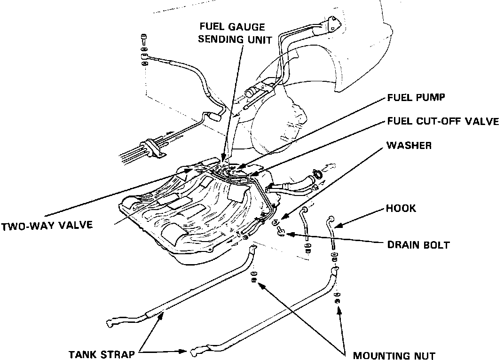

Fuel Tank: Description and Operation
Exploded View:

The fuel tank is mounted under the left rear of the chassis just ahead of the rear wheels. The tank houses the fuel pump and the fuel sending unit. A fuel cut-off valve prevents liquid fuel from entering the evaporative control system. A two-way valve is used to compensate for expansion and contraction of fuel under various temperature conditions. A drain bolt is located beneath the fuel tank.
The fuel tank will hold 18 US gallons of fuel. Recommended fuel is 91 RON unleaded. The tank is attached to the chassis with two steel straps.